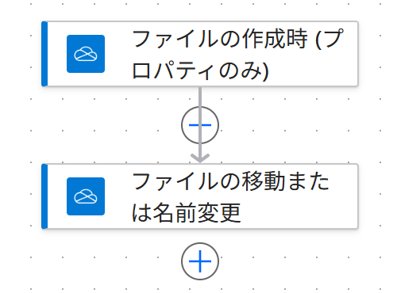

Vol.153-3
実際に作ったフロー：アクションは2つだけ

PA45 Demo 環境に作ったフローの画面です。
短いフローですが、移動先のパスに年月の式が入っているのが要です
短いフローですが、移動先のパスに年月の式が入っているのが要です

121
ファイルの作成時 (プロパティのみ)
/写真の受け取り に入ったら起動
2
ファイルの移動または名前変更
/写真/yyyy-MM/ ファイル名 へ移す
年月フォルダーは自動で作られる
PA45 第32回の実機で、無いフォルダーが移動のときに作られることを確認
日本時間の年月にする
作成日時は UTC。月末の夜に撮った写真が翌月にならないよう convertFromUtc を使う
スマホの自動アップロードとは別
カメラ ロールの自動バックアップ先ではなく、手で上げる受け取り用フォルダーにしている
向いている人現場写真を撮る施工・保守店舗の売場写真イベントの記録係家族の写真の整理
出典：Microsoft Learn